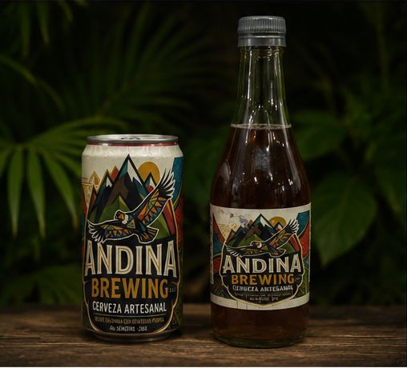
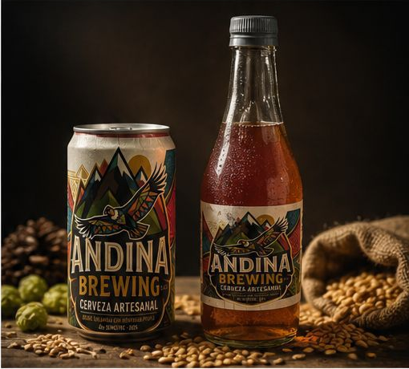
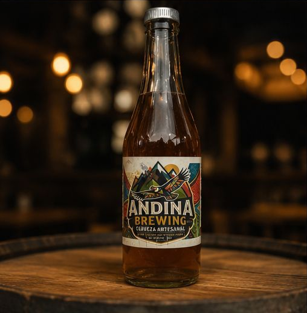
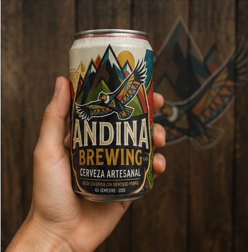
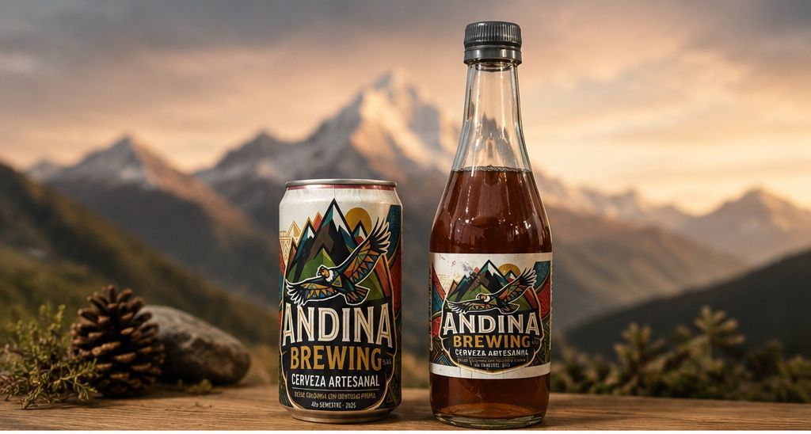

Cerveza artesanal inspirada en los sabores de la región andina de Colombia.
Conoce nuestros productosAndina Brewing es una empresa dedicada a la producción y venta de cerveza artesanal. Su objetivo principal es ofrecer un producto de buena calidad que represente los sabores de la región andina de Colombia y que pueda competir dentro del mercado de bebidas.
La empresa está constituida como una Sociedad por Acciones Simplificada, S.A.S., y pertenece al sector de bebidas, específicamente al mercado de la cerveza artesanal.

Cerveza rubia artesanal, suave y refrescante.
$8.000

Cerveza roja con sabor equilibrado y aroma especial.
$9.000

Cerveza negra con cuerpo, sabor intenso y notas tostadas.
$10.000

Cerveza artesanal con mayor aroma y amargor característico.
$11.000

Combo de cervezas artesanales para compartir.
$50.000
Los principales clientes de Andina Brewing están relacionados con el sector gastronómico, turístico y de entretenimiento.
Aunque la empresa cuenta con un buen producto, enfrenta dificultades para aumentar sus ventas debido a la fuerte competencia de grandes marcas, el bajo reconocimiento de la marca, los costos de transporte y la poca presencia en supermercados o tiendas grandes.
Lograr que Andina Brewing sea reconocida en el mercado de cerveza artesanal.
Incrementar las ventas en un 30% durante el próximo año.
Vender en al menos 20 bares y restaurantes.
Llevar los productos a nuevas ciudades como Bogotá, Medellín y Cali.
Para mejorar su posicionamiento, Andina Brewing implementará estrategias comerciales enfocadas en alianzas, promoción digital, participación en eventos y fidelización de clientes.
La empresa realizará una base de datos con clientes potenciales como bares, restaurantes, pubs, tiendas de licores y hoteles. El equipo comercial hará visitas presenciales, llamadas, mensajes por redes sociales y correos electrónicos para presentar el portafolio de productos.
Después del primer contacto se hará seguimiento para resolver dudas, negociar condiciones, cerrar ventas y evaluar resultados según el número de clientes nuevos y el volumen de ventas.
Andina Brewing - Cerveza artesanal colombiana
Correo: contacto@andinabrewing.com
Instagram: @andinabrewing